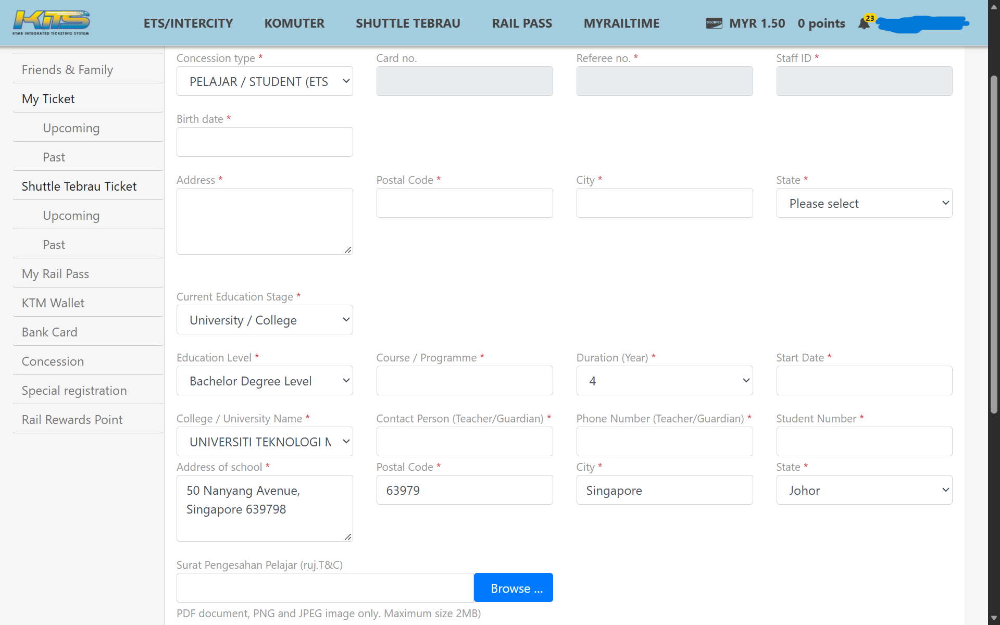
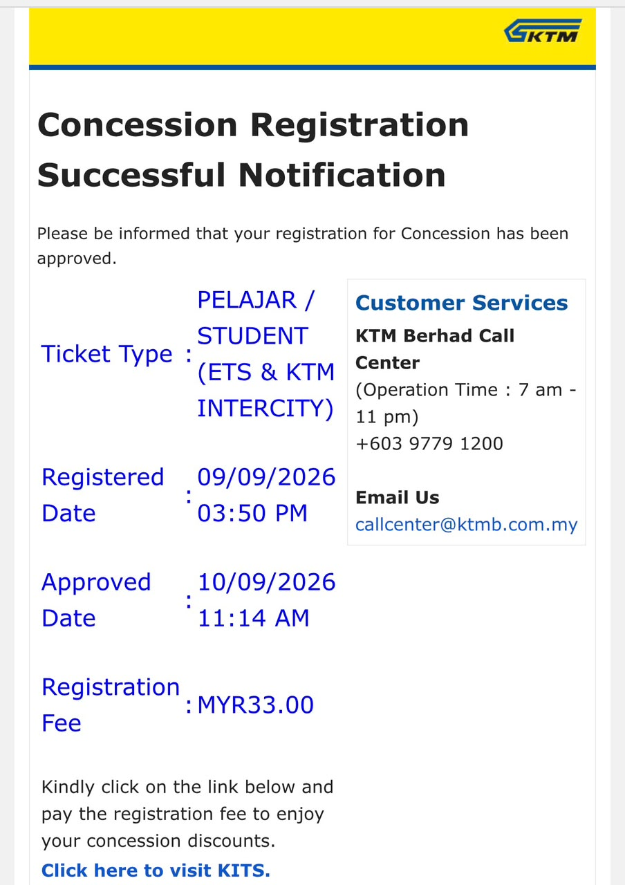
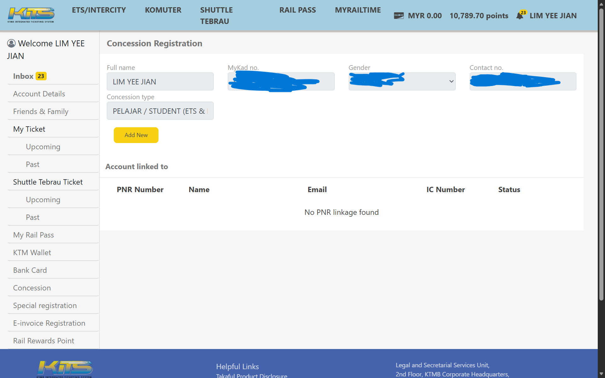

图 1：官方条款第 8 页《Student Verification Form》表格范本
Nanyang Technological University, 50 Nanyang Avenue, Singapore 639798）。4 year）。August 2023）。June 2027）。
在 Concession 页面点击申请，按下方对照表填入相应信息（对照图 2）：
| 表单区块 | 系统英文栏位 | 填写 / 选择内容 | 填写说明与技巧 |
|---|---|---|---|
| 上方区块 (个人资料) |
Concession type * | PELAJAR / STUDENT (ETS & KTM INTERCITY) |
下拉菜单选择学生类别 |
| 上方区块 | Card no. / Referee no. * / Staff ID * | (留空 / 无需理会) | 系统置灰或不可选，直接跳过 |
| 上方区块 | Birth date * | 个人出生日期 (DD-MMM-YYYY) | 与身份证一致的出生日期 |
| 上方区块 | Address * / Postal Code * / City * / State * | 马来西亚家乡居住地址 (IC 地址) | 此处为个人住址，必须填大马真实地址与邮编 |
| 下方区块 (学校资料) |
Current Education Stage * | University / College |
下拉选单选择大专/大学 |
| 下方区块 | Education Level * | Bachelor Degree Level |
学士学位选此项（硕博选对应等级） |
| 下方区块 | Course / Programme * | 真实科系全名 (如 Bachelor of Engineering in Electrical and Electronic Engineering) |
填写真实专业科系全称 |
| 下方区块 | Duration (Year) * | 课程年数 (如 3 或 4) |
下拉选择学制年数 |
| 下方区块 | Start Date * | 入学开学日期 (如 10 Aug 202X) |
选择真实入学日期 |
| 下方区块 | College / University Name * | UNIVERSITI TEKNOLOGI MALAYSIA (UTM), JOHOR |
【核心技巧】系统无海外大学，统一选距离最近的 UTM |
| 下方区块 | Contact Person (Teacher/Guardian) * | 家长姓名 | 填写真实家长姓名 |
| 下方区块 | Phone Number (Teacher/Guardian) * | 家长联系电话 | 填写家长有效手机号码 |
| 下方区块 | Student Number * | 大学学号 (Matriculation No.) | 填写真实的大学 Matric 号码 |
| 下方区块 | Address of school * | 50 Nanyang Avenue, Singapore 639798 |
填写真实大学英文校址（以 NTU 为例） |
| 下方区块 | Postal Code * (学校邮编) | 63979 |
【核心技巧】大马系统限制 5 位数，取新加坡邮编前 5 位 |
| 下方区块 | City * (学校城市) | Singapore |
填写真实校址所在城市 |
| 下方区块 | State * (学校州属) | Johor |
【核心技巧】配合 UTM 选项，选最靠近的州属 Johor |



作者：林毓健 （Lim Yee Jian） & Google AI studio
灵感提供：叶梓豪 （Yap Chee Xing）
协助提供照片样本：杨证皓 （Ngeoh Jen Haw）